Licencias del personal
Guía de uso de la app de la Supervisión Secundaria Zona I Valle Inferior: directores, equipo supervisivo y docentes de los CEPJA, cada grupo en su pestaña. Versión: noviembre 2026.
- Antes de empezar
- Crear tu usuario
- Entrar cada día
- La barra de arriba y las pestañas
- Una sola ficha por persona
- La pantalla de Inicio
- Cargar una persona
- Cargar una licencia
- Consultar la ficha de una persona
- Notas del día
- Reportes y nómina
- Días de clase (ciclo lectivo)
- Feriados, artículos y topes
- Pestañas (para quien administra)
- Usuarios (para quien administra)
- Respaldo de los datos
- Si no anda el servidor
- Si algo no anda
1. Antes de empezar
- La app se abre en licencias-supervision-zona-i.web.app. Guardala en Favoritos (la estrellita al lado de la dirección). En la pestaña del navegador la reconocés por el cuadradito oscuro con la Z.
- Funciona en Google Chrome, Microsoft Edge y en el celular.
- Los datos están en el servidor de la supervisión. Cada persona entra con su usuario y todos ven lo mismo, al instante: lo que carga una persona les aparece a las demás sin recargar la página.
- Hay tres tipos de usuario:
- Administra: carga todo y, además, maneja los usuarios, las pestañas y las copias.
- Carga licencias: los secretarios. Cargan y corrigen personas, licencias y notas.
- Solo consulta: la supervisora. Ve todo pero no puede modificar nada.
2. Crear tu usuario (una sola vez)
Para crear tu cuenta necesitás el código de la supervisión, que te pasa quien administra la app.
- Abrí la app y tocá Crear cuenta.
- Completá tu nombre y apellido, tu mail y una contraseña de al menos 6 caracteres.
- Elegí qué vas a hacer: Cargo licencias (secretarios) o Solo consulto (supervisora).
- Escribí el código de la supervisión. Da lo mismo si va en mayúsculas o minúsculas.
- Tocá Crear cuenta.
Con Googletambién se puede: tocá Continuar con Google, elegí tu cuenta de Gmail y después la app te pide qué vas a hacer y el código.
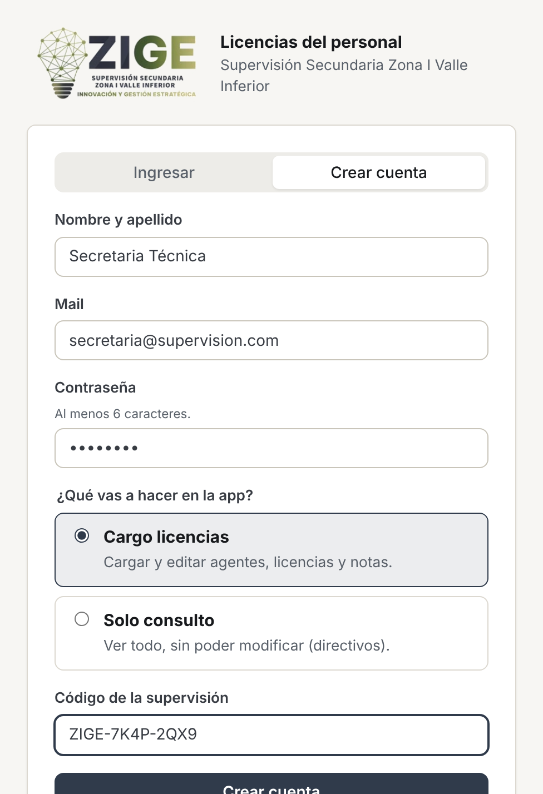
3. Entrar cada día
Escribí tu mail y tu contraseña y tocá Ingresar (o Continuar con Google, si creaste la cuenta así). En tu compu la sesión queda abierta: la mayoría de los días la app se abre directamente.
¿Te olvidaste la contraseña? Escribí tu mail y tocá Olvidé mi contraseña. Te llega un mail para elegir una nueva (si no aparece, mirá en spam).
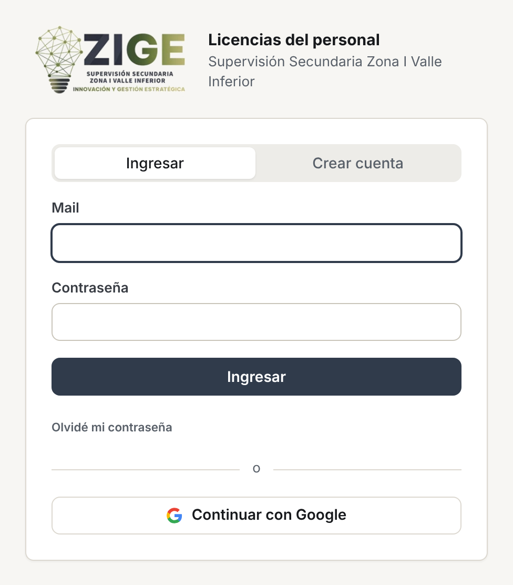
4. La barra de arriba y las pestañas
Arriba están las secciones (Inicio, Agentes, Reportes, Ajustes), tu usuario, el indicador de guardado, el buscador y el botón verde + Licencia. Justo debajo están las pestañas:
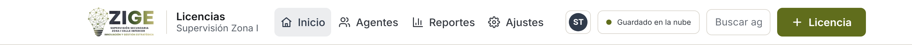
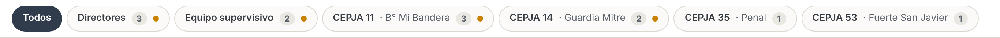
- Cada pestaña es un grupo: Directores, Equipo supervisivo y un CEPJA por pestaña. El número es la cantidad de personas, y el punto naranja avisa que hay licencias con trámites pendientes.
- Tocando una pestaña, todo lo que ves (Inicio, Agentes, Reportes) pasa a ser sólo de ese grupo. La pestaña elegida queda oscura.
- Todos muestra toda la supervisión junta.
- La app recuerda en qué pestaña estabas la próxima vez que la abrís.
| El indicador dice… | Qué significa |
|---|
| Guardado en la nube | Todo bien: lo que cargaste ya está en el servidor. |
| Guardando… | Lo está subiendo. Tarda un segundo. |
| Sin conexión | No hay internet. Podés seguir cargando: queda en la compu y se sube solo cuando vuelve la conexión. |
| No se pudo guardar | El servidor no aceptó el cambio. Recargá la página y, si sigue, avisale a quien administra. |
Tu usuario y cómo salir
Tocando tu inicial se abre tu usuario:
- Salir cierra la sesión. La compu se queda con una copia de los datos, por si algún día no anda el servidor (punto 17).
- Salir y borrar esta compu cierra la sesión y borra todo de esa compu. Usalo en una compu que no es tuya.
Sin internet, no salgas.Si cerrás la sesión mientras dice "Sin conexión", lo que todavía no se subió se pierde.
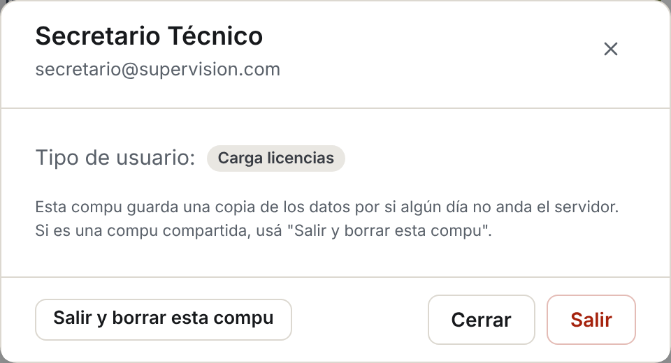
5. Una sola ficha por persona
Esto es lo más importante para entender la app: cada persona tiene una sola ficha, aunque trabaje en dos lugares. Lo que dice en qué pestaña aparece son sus cargos: cada cargo pertenece a una pestaña.
Por ejemplo, un docente con Matemática (ID 104512) y Física (ID 104513) en el CEPJA 11, y Matemática (ID 207720) en el CEPJA 14, aparece en las dos pestañas. En el CEPJA 11 se ven sus dos cátedras de ahí y la etiqueta también en CEPJA 14. Es siempre la misma ficha.
- Licencias que se cuentan juntas (por ejemplo, 1° enfermedad y el 13° familiar enfermo): el tope suma los días de todos sus cargos, en todas las pestañas.
- Licencias que se cuentan por cargo (el 20° b): cada cargo tiene su propio tope de 6 días por año y 2 por mes.
6. La pantalla de Inicio
En una pestaña muestra lo de ese grupo; en Todos, lo de toda la supervisión, más una tabla con una fila por pestaña:
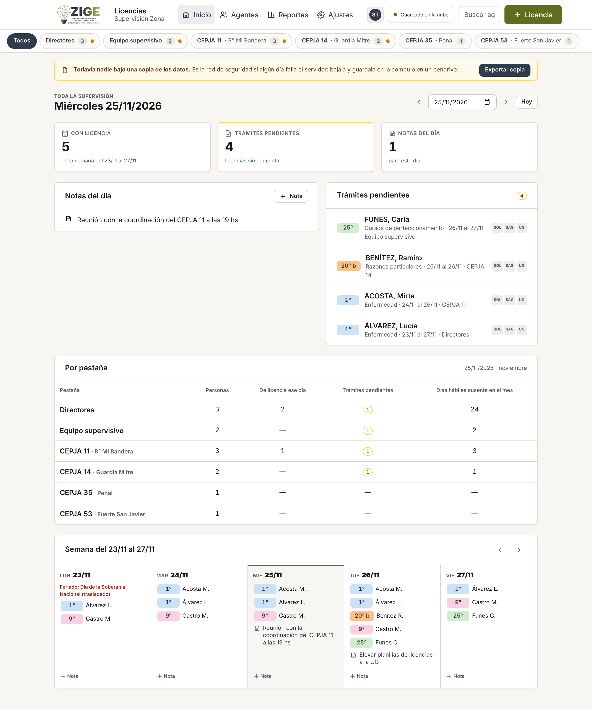
- Las tres tarjetas: cuántas personas tienen licencia en la semana, cuántas licencias tienen trámites sin completar y cuántas notas hay para ese día.
- Trámites pendientes: licencias a las que les falta algún paso: SOL solicitud, SAG cargado en SAGE y UG elevado a UG. Cuando un paso está hecho, se pone con tilde ✓.
- Por pestaña (sólo en Todos): personas, cuántas están de licencia ese día, trámites pendientes y días de ausencia en el mes. Tocando una fila vas a esa pestaña.
- La semana de lunes a viernes, con los feriados, las licencias y las notas. Con las flechas ‹ › te movés y con Hoy volvés al día de hoy.
7. Cargar una persona
- Elegí la pestaña donde trabaja (por ejemplo, CEPJA 11), andá a Agentes y tocá + Nuevo agente.
- Completá apellido, nombre y los datos de la planilla: DNI, CUIL, fecha de nacimiento, legajos, etc. Lo que no tengas, dejalo vacío.
- En Cargos, cada cargo ya viene con la pestaña en la que estás. En los CEPJA poné la cátedra y el ID, y si tiene más de una cátedra, tocá + Agregar cargo (puede haber varios ID en el mismo CEPJA).
- En Días y horario de trabajo, tildá los días de cada turno (mañana, tarde o vespertino/noche).
- Tocá Guardar agente.
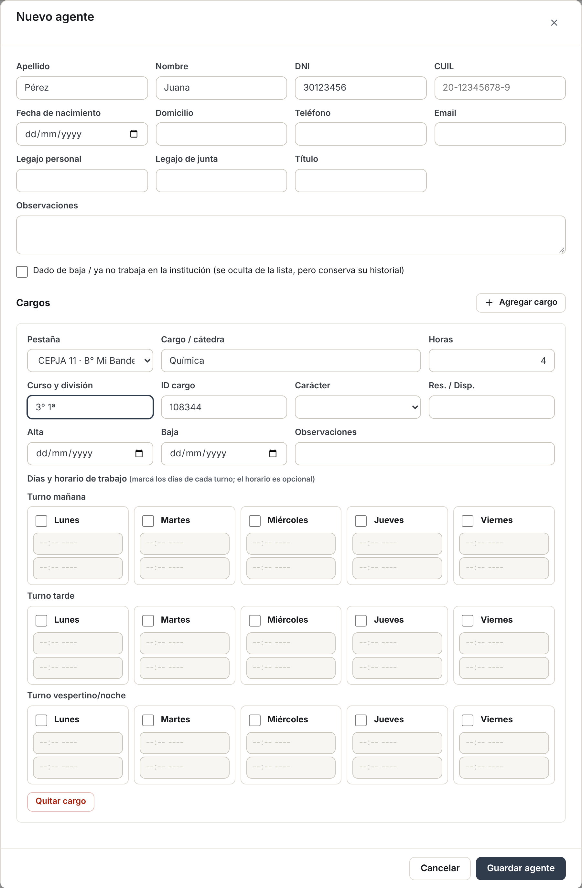
Directores: al elegir la pestaña Directores, el cargo pide la escuela a la que pertenece:
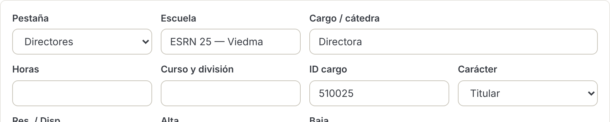
Si la persona ya está en otra pestaña, no la cargues de nuevo.Abrí su ficha (con el buscador de arriba), tocá Editar datos y agregale un cargo eligiendo la otra pestaña. Si igual intentás cargarla con el mismo DNI, la app te avisa en qué pestaña está.
Si alguien deja de trabajar,no lo borres: en "Editar datos" marcá "Dado de baja", o poné la fecha de baja en el cargo que deja. Así conserva todo su historial.
8. Cargar una licencia
- Tocá el botón verde + Licencia (está siempre arriba).
- En Agente, escribí parte del apellido o el DNI y elegilo de la lista.
- Elegí el Artículo. Abajo aparece un recuadro con lo que dice la resolución.
- Poné la fecha Desde y la cantidad de días (o la fecha Hasta). La otra se calcula sola, descontando fines de semana y feriados cuando el artículo cuenta días hábiles.
- Si tiene más de un cargo, revisá los Cargos afectados: marcá los cargos en los que falta. La licencia aparece en la pestaña de cada cargo marcado.
- Tildá los trámites que ya están hechos y tocá Guardar.
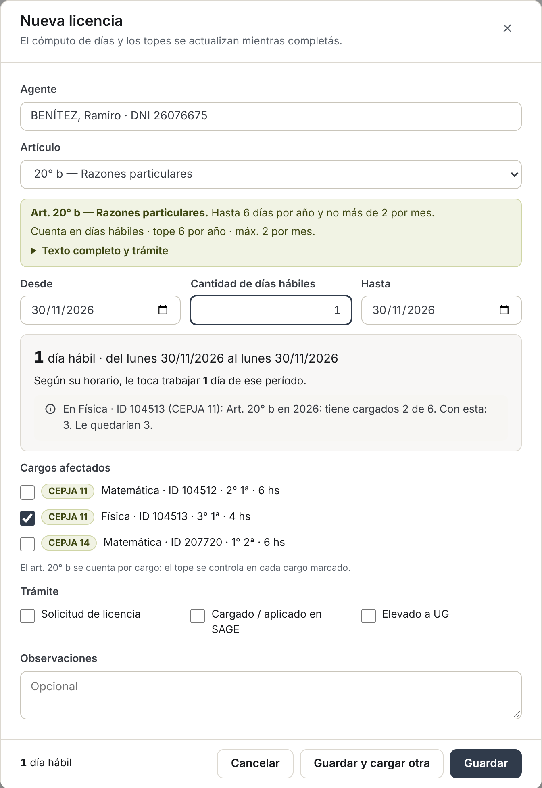
Los cargos se marcan solos así:para un artículo que se cuenta por cargo, como el 20° b, se marcan sólo los cargos de la pestaña en la que estás. Para los demás (enfermedad, familiar, etc.) se marcan todos. Siempre podés cambiarlos a mano.
Los avisos en amarillo no te frenan: te avisan.Por ejemplo, si con esta licencia se pasa del tope (y en qué cargo), o si se superpone con otra. Leelos y, si está bien así, guardá igual. Los avisos en rojo sí hay que corregirlos.
Las licencias cargadas a futuro cuentan para el tope desde el momento en que las cargás. Para corregir o borrar una licencia, tocala (en la ficha, en Inicio o en Reportes); abajo a la izquierda está Borrar, y durante unos segundos aparece "Deshacer".
9. Consultar la ficha de una persona
Arriba, en "Buscar agente…", escribí el apellido y elegilo. Se abre su ficha completa, con todas sus licencias de todas las pestañas. Al lado del nombre están las pestañas donde trabaja.
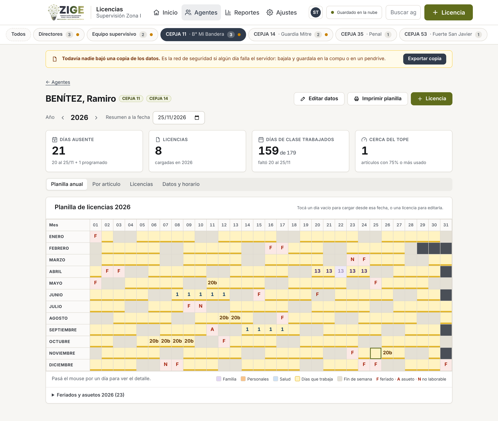
- Planilla anual: como la planilla amarilla. Cada día con licencia muestra el artículo con un color según el tipo; los días que trabaja van en amarillo claro.
- Por artículo: días usados, tope y cuántos le quedan. Los que se cuentan por cargo (20° b) tienen una fila por cada cargo, con su pestaña.
- Licencias: la lista, con los cargos que toca cada una.
- Datos y horario: datos personales y la tabla de cargos, con la pestaña ("Dónde"), cátedra, ID, horas, curso y carácter.
- Imprimir planilla imprime la ficha con el formato de la planilla, más el resumen.
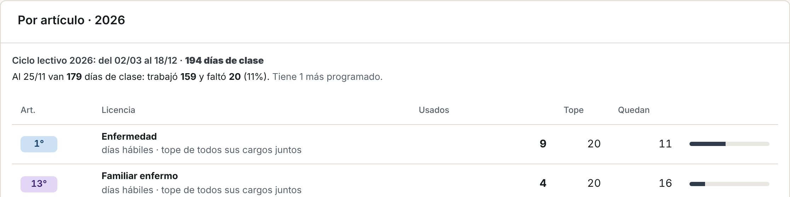
En Agentes está la lista de la pestaña: DNI, el ID y la cátedra de cada cargo en esa pestaña, los días que faltó y el detalle por artículo (por ejemplo 1° 9 son 9 días por artículo 1°). En el celular el ID y la cátedra aparecen debajo del nombre.
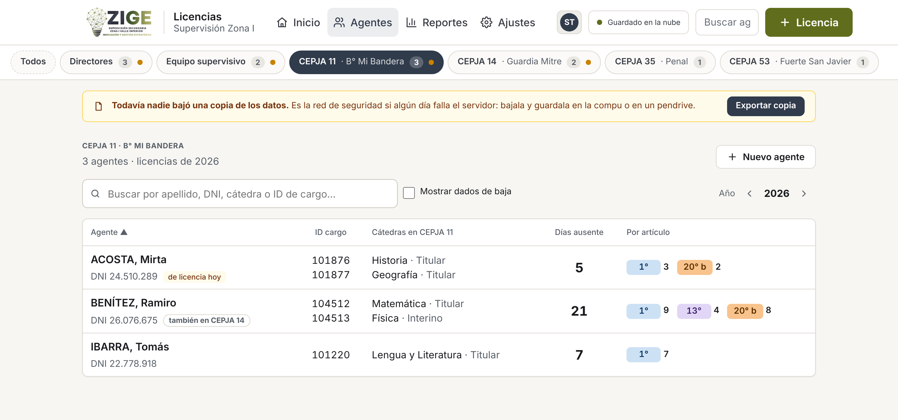
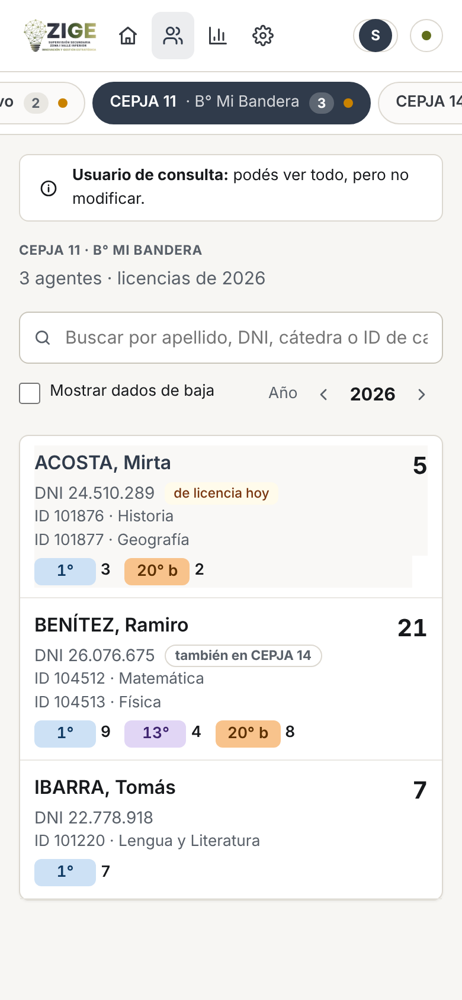
10. Notas del día
En Inicio, tocá + Nota en "Notas del día" o debajo de cualquier día de la semana. Escribí la nota y tocá Guardar nota. Para corregirla o borrarla, tocala.
- Una nota escrita dentro de una pestaña se ve en esa pestaña y en Todos.
- Una nota escrita en Todos es general: se ve en todas las pestañas.
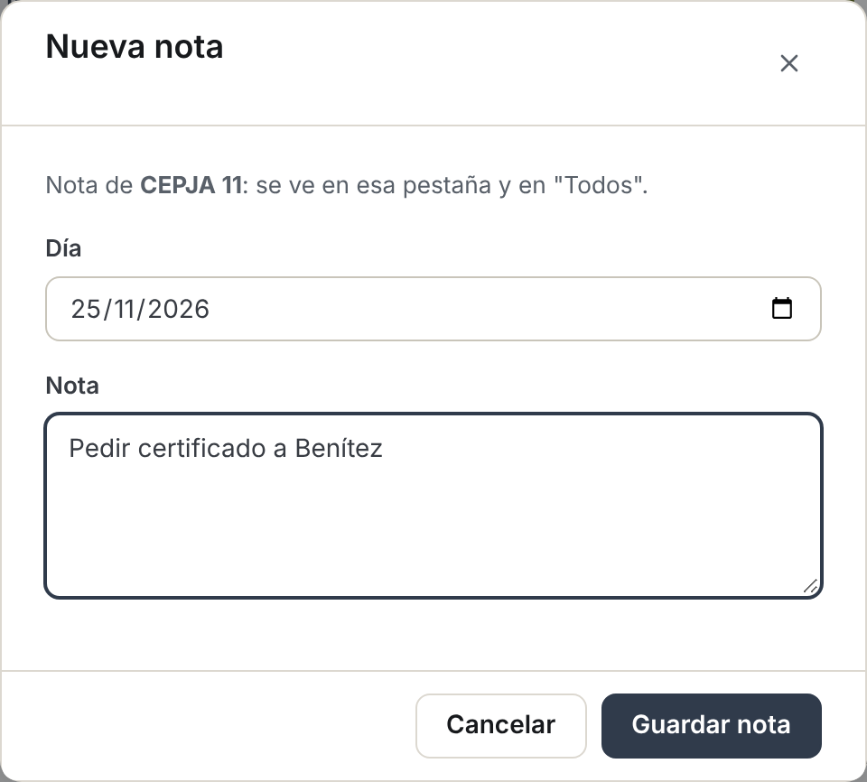
11. Reportes y nómina
En Reportes hay dos pestañas, y las dos muestran lo de la pestaña elegida arriba (o todo, en Todos).
Licencias
Elegís un período (o "Este mes", "Mes anterior", "Este año") y, si querés, un artículo. Muestra cuántas licencias y cuántos días hábiles faltó cada persona, cuántos días de clase faltó y trabajó, y el listado de licencias del período.
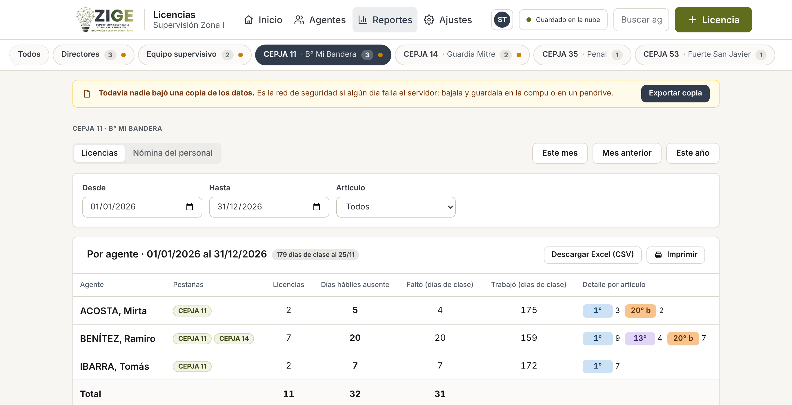
Nómina del personal
El padrón con CUIL, legajos, pestaña, ID, cátedra o escuela y fecha de nacimiento.
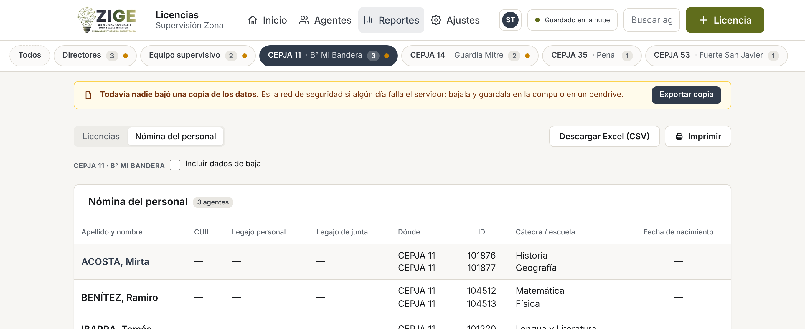
Descargar Excel (CSV) lo baja para abrir en Excel (en la nómina, una fila por cargo) e Imprimir lo imprime.
12. Días de clase (ciclo lectivo)
Para que la app calcule cuántos días de clase hubo y cuántos trabajó cada persona, hay que cargar cuándo empiezan y terminan las clases: Ajustes → Feriados y asuetos, recuadro "Ciclo lectivo". El calendario es el de la provincia, igual para todas las pestañas.
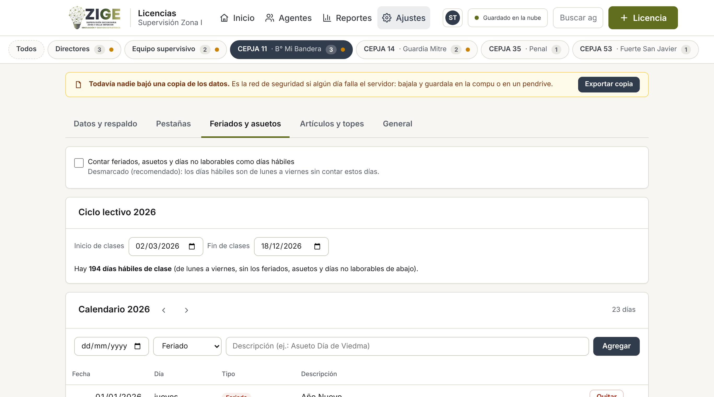
Para tener en cuenta:los días que todavía no pasaron no cuentan como trabajados, y hay que cargar el ciclo de cada año (el de 2027, pasando de año con las flechas).
13. Feriados, artículos y topes (Ajustes)
- Feriados y asuetos: ya están los de 2026 y 2027. Para agregar uno, poné la fecha, el tipo y la descripción y tocá Agregar. Deja de contarse como día hábil.
- Artículos y topes: de cada artículo podés cambiar el nombre corto, si cuenta días hábiles o corridos, el tope anual, el máximo por mes, el máximo por licencia y los trámites. Los marcados "Revisar" conviene confirmarlos con la normativa.
- La columna Tope dice si se cuenta Por persona (todos sus cargos juntos) o Por cargo. Por ahora, sólo el 20° b es por cargo.
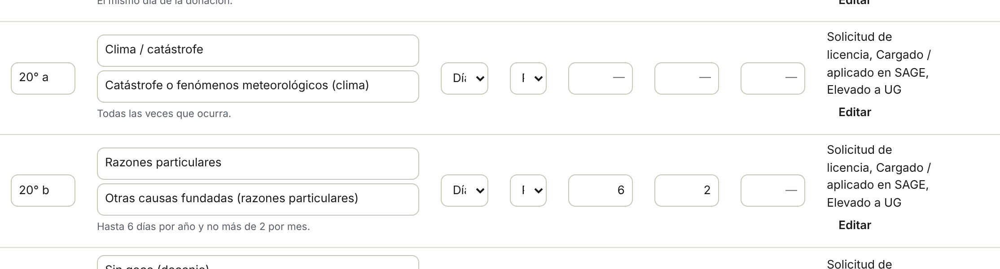
14. Pestañas (para quien administra)
En Ajustes → Pestañas se agregan, renombran, ordenan y archivan los grupos:
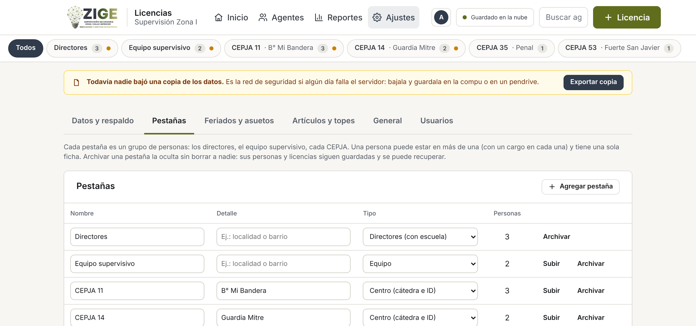
- + Agregar pestaña crea una nueva (por ejemplo, un CEPJA más). Escribile el nombre y el detalle (barrio o localidad).
- Tipo: "Centro (cátedra e ID)" para los CEPJA, "Directores (con escuela)" si cada cargo tiene que decir la escuela, o "Equipo".
- Archivar oculta la pestaña sin borrar a nadie: sus personas y licencias siguen guardadas. Con Recuperar vuelve.
15. Usuarios (para quien administra)
Quien administra ve en Ajustes la pestaña Usuarios:
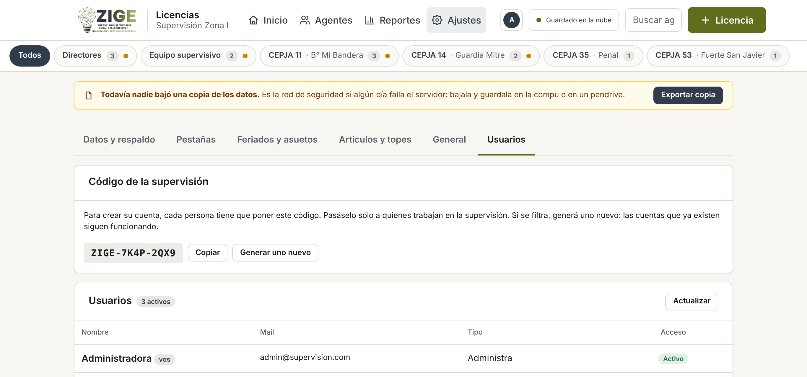
- Código de la supervisión: el que hay que pasarle a cada persona para que cree su cuenta. Si se lo pasaste a alguien que no debía tenerlo, tocá Generar uno nuevo: el viejo deja de servir, pero los que ya tienen cuenta siguen entrando.
- Tipo: se cambia con la lista de cada persona.
- Dar de baja: desde ese momento esa persona no puede ver ni cargar nada. Se puede reactivar.
16. Respaldo de los datos
Los datos están en el servidor, así que no se pierden si se rompe una compu. Igual hay tres redes de seguridad:
- Copia automática todas las noches, en el Google Drive de las cuentas dueñas del proyecto (carpeta Copias Licencias Supervisión).
- Copia en cada compu: mientras usás la app, la compu guarda sola una copia, por si algún día no anda el servidor (punto 17).
- Exportar copia: baja un archivo con todos los datos. Conviene hacerlo una vez por semana y guardarlo en un pendrive. La app lo recuerda con un aviso amarillo.
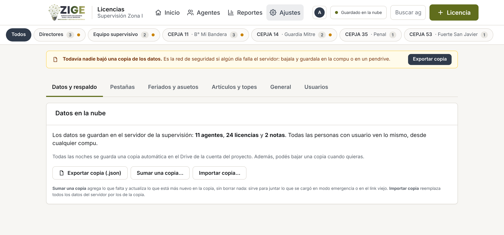
| Botón | Qué hace |
|---|
| Sumar una copia… | Agrega lo que la copia tiene de nuevo, sin borrar nada. Es la que se usa para juntar lo que se cargó en modo emergencia. Sumar dos veces la misma copia no duplica nada. |
Importar copia…
(sólo quien administra) | Reemplaza todo por lo que tiene la copia. Es para volver atrás si algo se rompió mucho. Lo que se cargó después se pierde. |
17. Si no anda el servidor
Si algún día la app no puede conectarse, en la pantalla de ingreso aparece "Usar la copia de esta compu". Tocándolo entrás en modo emergencia, con los datos como estaban la última vez que usaste la app en esa compu.
- Cargá como siempre. Queda guardado sólo en esa compu.
- Al terminar cada día, tocá Exportar copia.
- Cuando el servidor vuelve, entrá normal y juntalo con Ajustes → Datos y respaldo → Sumar una copia…
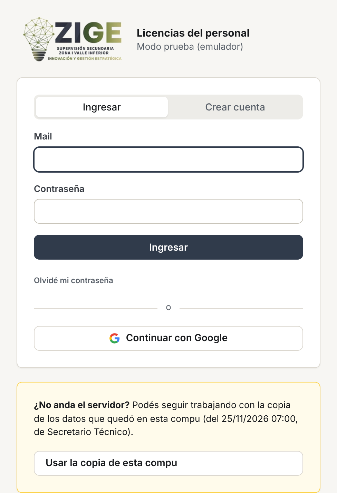
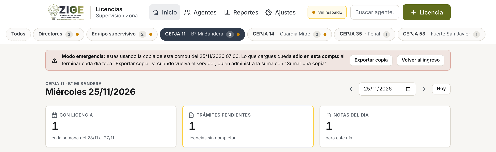
Si la página ni siquiera abre,usá el link de respaldo (santifarah1.github.io/Supervision) y cargá ahí. Después, lo mismo: Exportar copia y Sumar una copia.
18. Si algo no anda
| Pasa esto… | Hacé esto |
|---|
| Dice "El código de la supervisión no es correcto" | Revisá que esté completo, con los guiones. Si sigue, pedíselo de nuevo a quien administra: puede que lo haya cambiado. |
| Dice que tu acceso está dado de baja | Avisale a quien administra para que te reactive. |
| No encuentro a una persona | Fijate en qué pestaña estás (o pasá a Todos), y tildá "Mostrar dados de baja". |
| Una persona aparece dos veces | Tiene que tener una sola ficha. Avisale a quien administra: se pasan las licencias a una ficha y se borra la otra. |
| Una licencia no aparece en un CEPJA | Abrila y mirá los Cargos afectados: aparece sólo en la pestaña de los cargos marcados. |
| El indicador dice "Sin conexión" | Seguí cargando: se sube solo cuando vuelve internet. No cierres la sesión mientras tanto. |
| Borré algo sin querer | Tocá "Deshacer" enseguida. Si ya pasó, quien administra lo recupera de la copia de la noche anterior. |
| La app se ve como antes después de un cambio | Recargá la página con Ctrl + F5. Los datos no se tocan. |
| Un número no coincide con lo que calculo yo | Abrí la licencia y mirá el recuadro gris: dice qué días contó y cuáles no. Si sigue sin coincidir, sacale una foto a la pantalla y mandásela a quien administra. |
Licencias · Supervisión Secundaria Zona I Valle Inferior · guía de uso · noviembre 2026